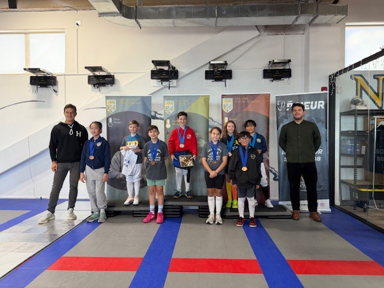
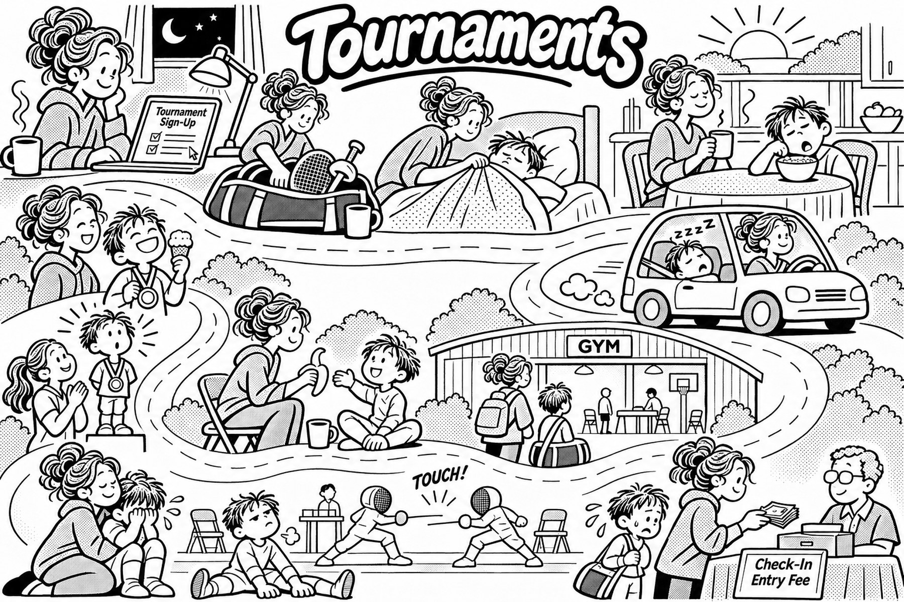

Seven Elite FC fencers, most in their first tournament, stepped on the strip at Medeo Youth Challenge #5.
Seven Elite FC fencers took a first competitive step on Sunday at Medeo Youth Challenge #5, at Medeo Fencing Club in Bound Brook.
Samuel SarroWaite fenced in Y12 Mixed. Roy Yoo, Elle Peterfreund, Nora Li and Claire Widjaja fenced in Y10 Mixed. Owen Li and Mira Shukla fenced in Y14 Mixed.
For most, it was their first tournament. Elle Peterfreund and Owen Li were fencing their second.
Showing up for those first bouts is how a competitive path starts. You pack the bag, you check in, and you fence. Ratings and bigger events come later. Sunday was the beginning.
A beginner asked r/Fencing whether tennis shoes work as well as fencing shoes, at about half the price. r/Fencing commenters said the usual recommendation is indoor court shoes — squash or volleyball, a common example being ASICS Gel Rocket — and that entry fencing shoes, at about $80 to $100, wear out in a year or two. Some epee fencers prefer tennis shoes on aluminum strips. That’s the commenters’ opinion, not advice.
| Date | What closes |
|---|---|
| Nov. 11 | Junior Olympics — regular-fee deadline |
| Jan. 8 | N.J. high school — independent fencers’ entries close |
USA Fencing deadlines are 11:59 p.m. Pacific (2:59 a.m. Eastern the next day). The Junior Olympics regular-fee deadline is today.
| Dates | Event |
|---|---|
| Nov. 11 | Youth Olympic Games, men’s epee (Dakar) |
| Nov. 12–15 | Senior World Cups: Berne (men), Wuxi (women) — FencingTV |
| Nov. 26–29 | Junior/Cadet World Cup (Novi Sad, Serbia) |
| Dec. 3–6 | Senior World Cup, men and women (Vancouver) — FencingTV |
Dakar streams from the FIE; Berne, Wuxi and Vancouver are on FencingTV. No start times listed. No stream listed for Novi Sad.
| Fencer | Event | Finish |
|---|---|---|
| Maksim Milinkovic | Senior Open, Mixed (Nov. 8) | 7th of 31 |
| Nico Ng | Senior Open, Mixed (Nov. 8) | 8th of 31 |
| Madeline Siu | NYFA #1, Y8 Mixed (Nov. 8) | 3rd of 4 |
| Maximus Siu | NYFA #1, Y10 Mixed (Nov. 8) | 8th of 17 |
| Remy Ng | NYFA #1, Y12 Men (Nov. 8) | 8th of 13 |
| Christina Jiang | NYFA #1, Y12 Women (Nov. 8) | 5th of 9 |
| Mila Siu | NYFA #1, Y14 Women (Nov. 8) | 5th of 10 |
| Stella Kuo | NYFA #1, Y14 Women (Nov. 8) | 6th of 10 |
Elite FC was well represented last weekend. We hope to see more and more of the club’s kids at events.

Maximus Siu, 8th of 17 in Y10, is among the finalists pictured at NYFA Youth Cup #1.
| Event | Elite FC |
|---|---|
| Saturday, Nov. 14 | |
| Y14 Women | Stella Kuo, Mila Siu |
| Sunday, Nov. 15 | |
| Y12 Women | Stella Kuo, Mila Siu |
| Event | Elite FC |
|---|---|
| Friday, Nov. 20 | |
| Junior Women | Anayaa Sheth |
| Saturday, Nov. 21 | |
| Cadet Men | Nico Ng |
| Sunday, Nov. 22 | |
| Junior Men | Athreya Aravind, Nico Ng |
| Time | Event | Elite FC |
|---|---|---|
| Saturday, Nov. 14 | ||
| 8:00 AM | Y14 Women | Penny Young |
| 1:00 PM | Junior Women | Amina Gore |
| Sunday, Nov. 15 | ||
| 8:00 AM | Cadet Women | Amina Gore, Penny Young |
| 12:00 PM | Y12 Women | Penny Young |
| Event | Elite FC |
|---|---|
| Friday, Nov. 27 | |
| Y14 Men | Connor Anderson, Noah Gore, Kian Jaising, Remy Ng, Ash Shah-Mirani |
| Cadet Women | Amina Gore, Olivia Hayes, Stella Kuo, Lillian Liu, Mila Siu, Penny Young |
| Y10 Men | Bryce Cheng, Joshua Jeong |
| Saturday, Nov. 28 | |
| Y12 Women | Christina Jiang, Stella Kuo, Mila Siu, Penny Young |
| Y12 Men | Kian Jaising, Joshua Jeong, Remy Ng |
| Sunday, Nov. 29 | |
| Y14 Women | Stella Kuo, Mila Siu, Penny Young |
| Cadet Men | Connor Anderson, Nico Ng, Caden Wu |
Pizza is at the Floyd Little Athletic Center. Cobra is at the Meadowlands Expo Center. Entry lists last confirmed Nov. 9–10; Cobra lists no start times.
Also on the calendar. This weekend, three local events have no Elite FC entries yet. On Saturday, Nov. 14, Revolution Fencing Center hosts Y10, Y12 and Y14 Mixed in West Chester, Pa.; preregistration closes that day. On Sunday, Nov. 15, Freehold Fencing’s November Open (Senior Men and Women, in Freehold, N.J.) and Wanglei Fencing’s November Cup II (Cadet and Junior, in Plainsboro Township, N.J.) are good practice with decently competitive fields, a fit for older fencers. Preregistration for both Sunday events closes Saturday, Nov. 14.
A rating is a letter. USA Fencing classifies fencers A (the highest), then B, C, D, E, and U — unclassified, where everyone starts. The letter is followed by a year: A26 means an A earned or re-earned in 2026.
Ratings are earned, one weapon at a time, at USA Fencing-sanctioned competitions, from local events to national ones. What a competition can award depends on the size of the field and the ratings already in it. The official chart is in the USA Fencing Athlete Handbook (2026–27).
A new rating is official only when it appears on USA Fencing’s membership list. It lasts four seasons. If it isn’t renewed in that time, it drops one letter at the start of the next season, on Aug. 1. A B earned in 2020 (B20) and not renewed became a C24 on Aug. 1, 2024.
The letter is a seeding tool, not a verdict. Every A in the club started as a U.
